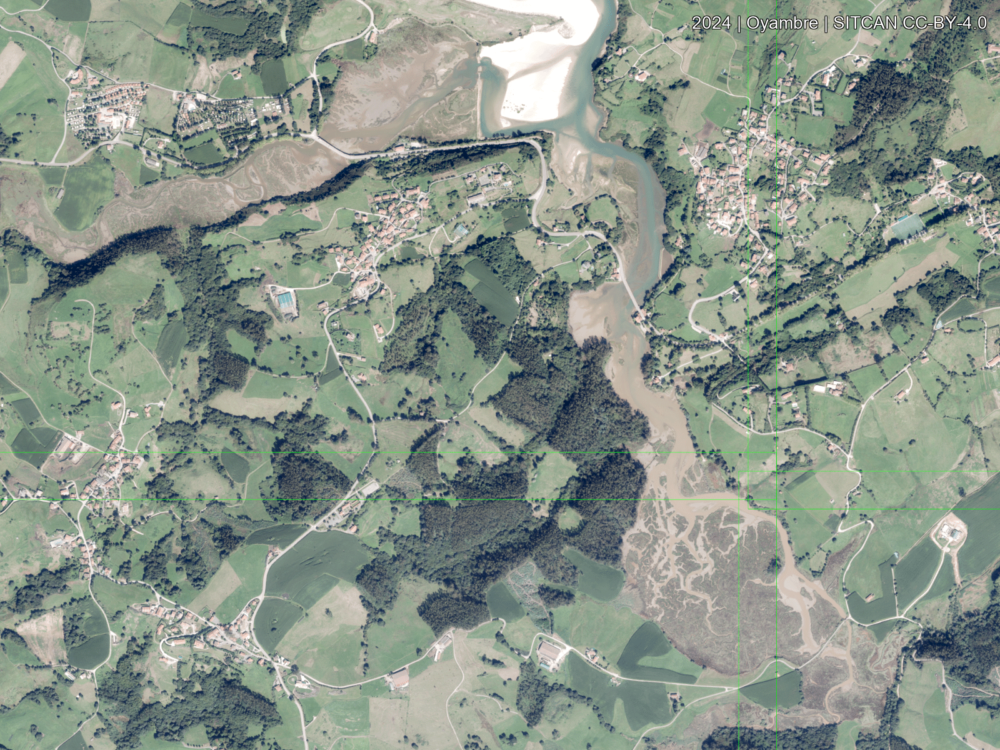

Oyambre Opacity Blend
Blend the earliest and latest imagery to inspect alignment and broad habitat change.


Slide to change how strongly the 2024 layer sits on top of 1956.
Blend the earliest and latest imagery to inspect alignment and broad habitat change.
